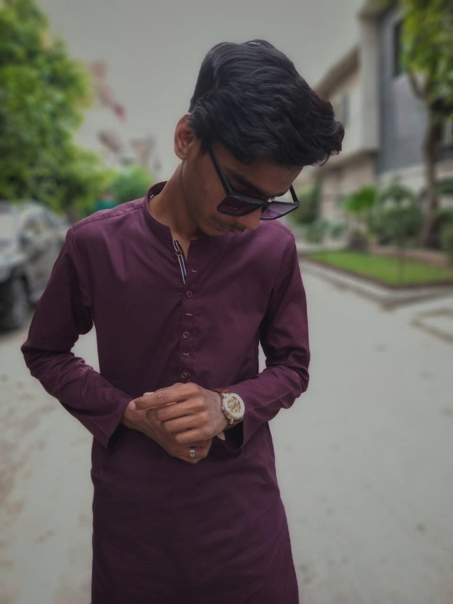

Hi guys ! My name is Husnain Raza. I was born on 21st of January in 2005 in Lahore Pakistan and currently I am also living in Lahore. I’m 18 years old. My nationality is Pakistani. I follow Islamic religion.
Being surrounded by teachers and books I have build a deep interest in books. From the young age I started reading books,Being a Urdu speaking I first read Urdu books like Tareekh-e-Islam Deewan-e-iqbal etc. I have also read English books like The Giver, Lord of the Flies etc. Being from a nation that is very much passionate about cricket I have also a huge amount of interest in cricket
Every person in this universe has own different philosophy in life. It depends on the experience we have in life. There are people who have lived the same life but has philosophy of their own. Same way I also have my own philosophy of life. Being surrounded by teachers and books throughout my philosophy of life is simple to gain a huge amount of beneficial and spiritual knowledge. Not just gain knowledge but also spread it and become teacher. Teachers are not only in the academia institutes, infact we are surrounded by teachers everywhere in the bazar, in the Masjid, in the streets, in the house. Teacher can be anyone it can be our parents our friends, our colleagues, our classmates. And we have to respect them as Hazrat Ali “IF A PERSON TEACHES ME ONE SINGLE WORD, HE HAS MADE ME HIS SERVANT FOR A LIFETIME”. So with seeking knowledge we also should forward it.
Mobile numeber: 03097749238
Email-Address: nainirajpoot07@gmail.com
Facebook:Hasnain Raza
TwitterHasnain Raza
Instagram:hasnain_raza_rajpoot